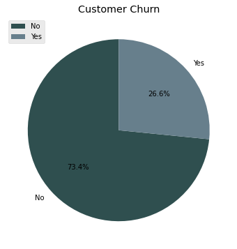

Data Analytics
Customer Churn
Businesses use customer churn analysis as one of their key business metrics because the cost of retaining an existing customer is far less than acquiring a new one.
Churn = Percentage of existing customers who stop purchasing your products or services, often measured in a year.
How can data analytics help?
Predicting when, why, and which customers will return or leave is a big challenge for many businesses. Predictive marketing can help flag customers who are at risk of leaving so that marketers can take proactive steps to retain these customers. Predictive analytics can also generate insights about loyalty-inducing behaviors that maximize customer lifetime value.
Case Study: How can I help to reduce churn and increase revenue?
For a telecommunications company, I have done an extensive analysis to help reduce churn. The telecommunications company wanted to know what causes customers to churn and whether one can know which customers are likely to churn.
Out of a total of 7043 customers, 26.6% of them have churned over the analysis period. That is about 1900 customers.

Who is churning?
We identified some of the types of customers who are likely to churn by comparing the churn rate with average monthly recurring revenue (MRR).
Although seniors account for only 16% of the customer base, they have a higher MRR and churn rate than non-seniors.


Gender does not seem to influence whether a customer will churn or not.

More than half the customer base are on month-to-month contracts — a churn rate greater than 40%, versus <15% for one-year and <5% for two-year contracts.


When are they churning?
The average customer tenure is 29 months. Churn rate exceeds 40% in the first five months, peaking above 60% in month one. The longer customers stay, the lower their chances of leaving.


Customers with monthly charges above $65 are most susceptible to churn — the company is losing its most valuable customers.

Want to know more about how data analysis can help your business? Get in touch